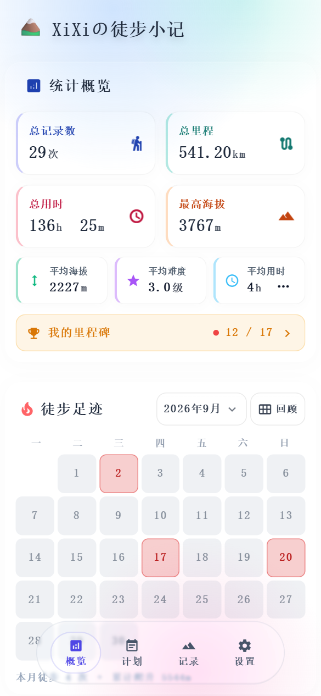
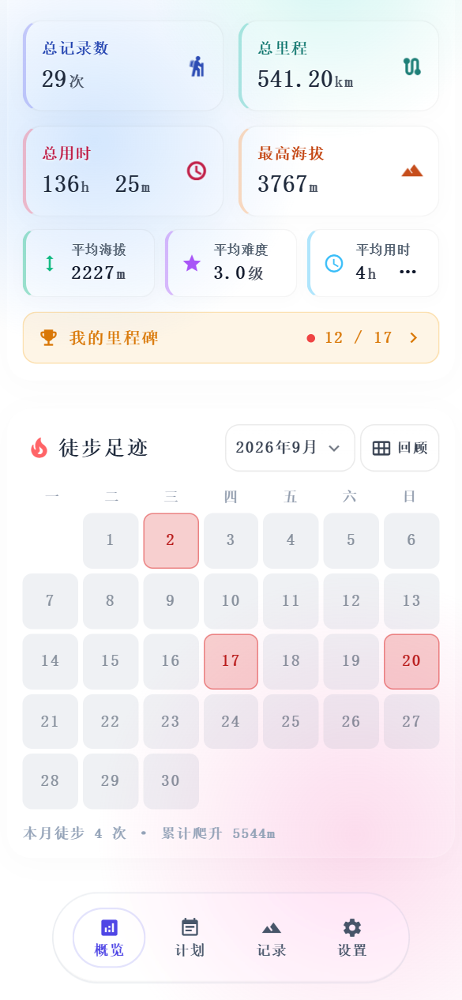
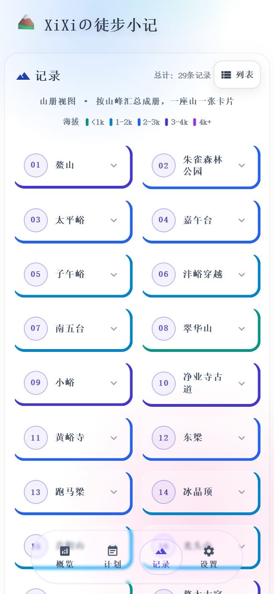

纯本地/无账号/无广告
给爱爬山的人，
一本安静的徒步日记本
记下每一座山、每一段路、每一次出发时的心情。规划下一次行程，然后看着自己的足迹，一年一年长出来。
不是徒步数据平台，也不是轨迹工具 ——
只是一本你自己的日记本。
01
是日记本，不是专业工具
不逼你填一堆参数。山名、日期、心情，想写就写；里程、爬升、天气、同行的人都可以留白。重点是你当时怎么想，不是数据多准确。
02
数据在你自己手里
记录与照片只存在你的设备上。只有你主动配置了自己的网盘，才会同步到你自己的账号 —— App 没有开发者服务器，也不收集、不上传任何使用数据。
03
上山没信号也照记
完全离线可用。到了山里打开就能写，不用等信号，也不怕断网；回到家再慢慢整理照片和细节。
界面
下面是它真实的样子
演示数据，非设计稿。



功能
够用就好，不做多余的事
-
01徒步记录
山名、日期、里程、用时、爬升、难度、心情、天气、同行人，还有一段想写多少写多少的小日记和照片。
-
02出行计划
先定好下次去哪，到日子早上提醒你；过期了可以一键「完成」转入记录，也可以直接延期改期。
-
03徒步足迹
每个月一张打卡日历，去过哪天一眼看清；同一格点开就能回看那天的记录，还有「那年今日」提示。
-
04山册
去过的山自动汇成一册，按海拔高低着色，一座山一张卡 —— 翻起来像在数自己的收藏。
-
05分享卡
把一次行程生成一张干净的图片，发给朋友或者留着自己收藏。
-
06年度回顾与备份
年底回顾这一年走过的路；随时一键导出完整备份（含照片），换手机不丢。
更新日志
最近两个版本
App 内「关于应用」也能看到同一份内容。
v1.2.2.1009-24
- 记录页的删除按钮和计划页统一了 —— 以前记录页列表里是红垃圾桶，跟计划页的灰垃圾桶不是一个样；现在两处长得一模一样。
- 计划页日历明细的删除按钮补回了边框 —— 之前那个按钮没有边框，孤零零一个字看着像残影。
- 热力图弹窗的「分享」按钮字色修好了 —— 浅色模式下以前是白字，几乎看不见。
v1.2.2.909-23
- 「使用前确认」弹窗的两个按钮不再一大一小 —— 以前「同意并继续」比旁边的「暂不同意」矮一截也窄一截。
- 顺带修好另外三个按钮的尺寸 —— 日期选择器的「确定」、支持作者的「保存二维码」、足迹里那天的「分享」。